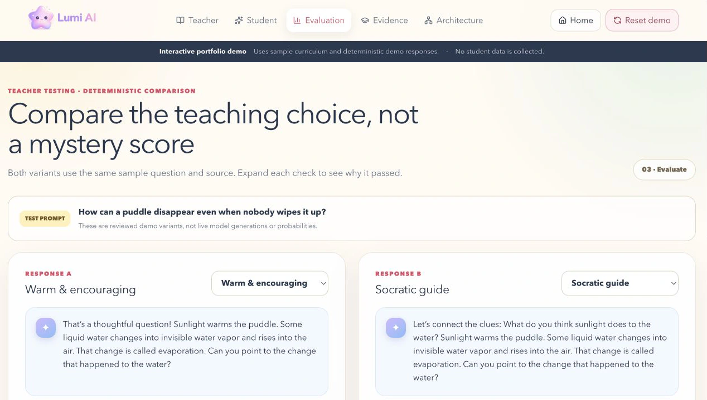

Teacher knowledgegrounded source
Evidencelinked feedback
Retrieval boundaryground before generation
Abstentionunsupported response boundary
Privacy separationservice boundary
01 · AI Systems · 2026—Present
Lumi AI
Grounded conversational learning
Evaluation & evidence
Privacy-aware grounding
Teacher-grounded conversational learning with retrieval boundaries, abstention, evaluation, and evidence-linked feedback. The public demo uses transparent sample data.
SystemTeacher-grounded conversational learning
CoreRAG grounding · evaluation · abstention
ArchitecturePrivacy-aware services · retrieval · evidence-linked feedback